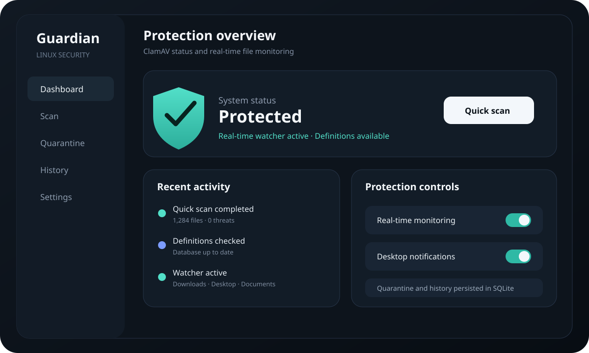

Guardian Antivirus
A Linux desktop security application built around Python, Qt and ClamAV, combining malware scanning, asynchronous filesystem monitoring, quarantine workflows, persistent history and defensive settings behaviour in one user-facing interface.

The challenge
ClamAV provides mature scanning capabilities, but a desktop application still has to coordinate engine availability, long-running work, file monitoring, quarantine state, settings and user feedback correctly. Guardian explores how those lower-level capabilities can be presented through a clearer application layer without overstating what protection is actually active.
The interesting engineering work is the coordination between UI state, background monitoring, scanner results, quarantine, persistence and failure handling.
What I built
- Quick, home and custom scan workflows through a PySide6 desktop interface.
- ClamAV daemon scanning with CLI fallback and explicit error handling.
- Asynchronous filesystem monitoring for creation, modification, move and close events.
- Quarantine, restore and delete workflows with overwrite protection.
- SQLite-backed scan history and application state.
- Tray behaviour, login-startup integration, notifications and settings controls.
- Searchable history and quarantine views with defensive export behaviour.
Engineering decisions
- Separation of concerns: scanning, monitoring, persistence, quarantine and notifications are kept as distinct components rather than embedded directly in the UI.
- Defensive UX: failed scans, missing engines, timeouts and cancelled work are never silently represented as clean results.
- OS-aware behaviour: the application accounts for Linux permissions, service availability, tray support and long-running background work.
- Careful security claims: the project is presented as a ClamAV frontend and monitor, not as a certified antivirus or kernel-level execution blocker.
Verification
The project has an automated pytest regression suite covering scanner status handling, archive policy, quarantine and restore behaviour, overwrite protection, database thread ownership, worker failures, settings, navigation and scan lifecycle. Target-machine checks are still documented separately for ClamAV permissions, tray integration, notifications and live harmless EICAR testing.
Architecture
What this demonstrates
Guardian moves beyond conventional CRUD development. It demonstrates Linux integration, process orchestration, defensive programming, desktop UI design and the need to verify that application state matches what the underlying security services are actually doing.